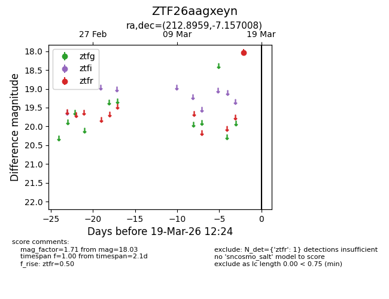
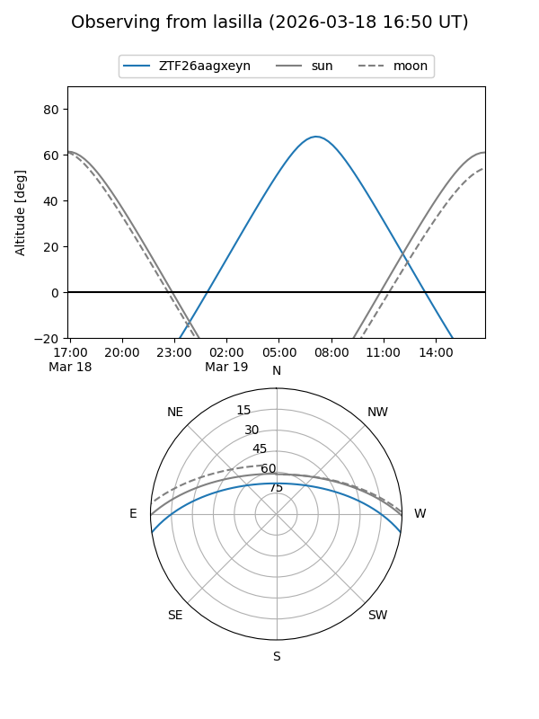
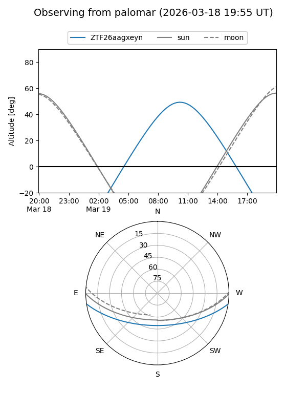

ZTF26aagxeyn
Target ZTF26aagxeyn at 2026-03-19 12:26
Aliases and brokers:
FINK: link
Lasair: link
ALeRCE: link
alt names
ZTF26aagxeyn (ztf,fink_ztf)
Coordinates:
equatorial (ra, dec) = 212.8959,-7.15701
equatorial (HMS+DMS) = 14:11:35.01,-07:09:25.23
galactic (l, b) = (335.3194,+50.60569)
Flags:
Photometry:
last ztfr=18.03
1 ztfr detections
Lightcurve

Visibility


Additional plots